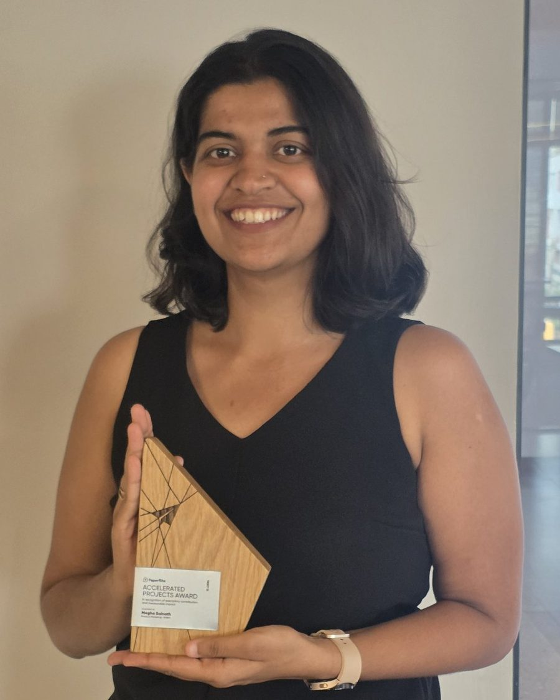
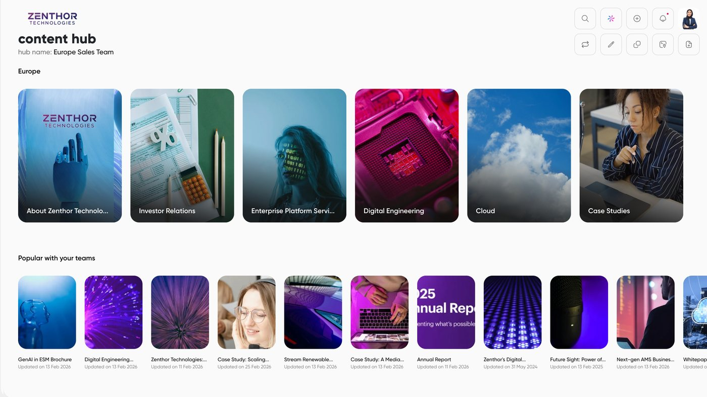
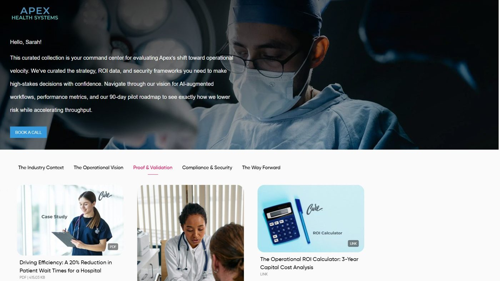
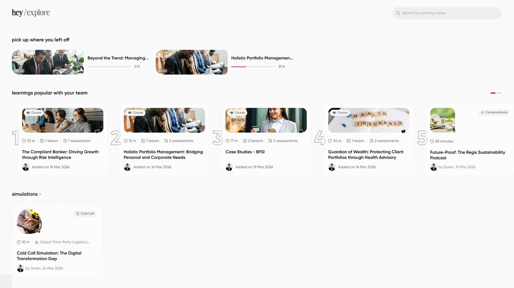
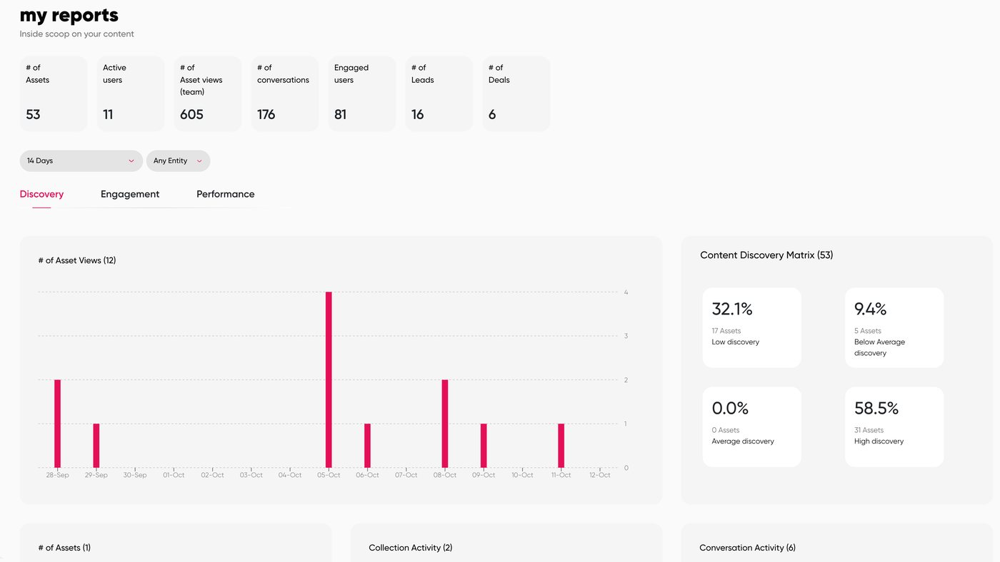
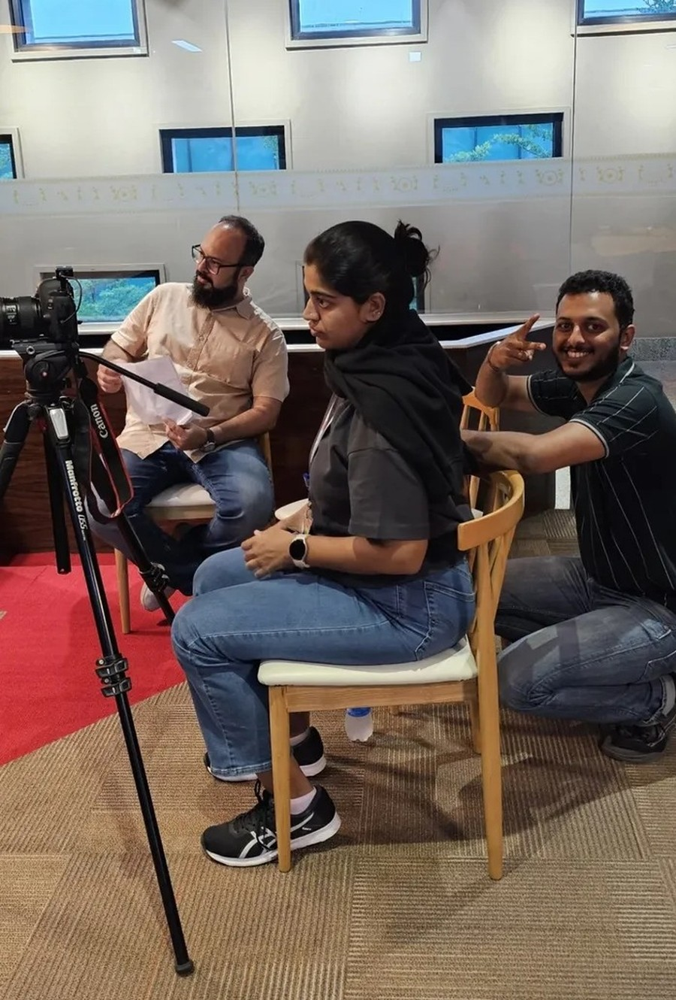

Reps were rebuilding tailored demo hubs for every prospect. In a four-person program with our CTO, marketing director, and a QA colleague, I built seven industry-specific demo environments, each with its own accounts, users, content library, digital sales rooms, and tailored buyer pages. They connect to Salesforce and HubSpot, so reps work from real prospect data. I led the enablement session, and the whole sales team put the environments to use.
To go with them, I wrote three Nurture Guides (one is linked below). The healthcare guide maps content to the five stages of the buyer's journey, with a step-by-step script for what reps should send and when, and I built tailored microsites that show which topics each prospect engages with. It cut the time reps spent personalizing outreach and was later reused to onboard new customers. I earned Paperflite's Accelerated Projects Award for my contribution to this project and its measurable impact.
*Screenshots from demo accounts. The companies, people and data are fictional.





As vertical content lead at Hexaware, I worked as a strategic content partner for the travel and hospitality vertical, turning our industry leaders' vision into a Q1 content calendar that built momentum for a global Aviation Round Table conference. I storyboarded it as a marketing funnel. At the Awareness stage, a video I scripted on transforming travel, transportation and hospitality introduced the industry story. The Interest stage included a challenge-and-solution flyer, "Revolutionizing Aviation IT," that hooked time-pressed executives with urgent industry pain points. At the Decision stage, a Middle Eastern airline case study provided the proof, built around a four-month shift from distance-based to spend-based loyalty and its effect on revenue and passenger retention. Targeted drip emails and social campaigns carried the sequence up to the conference. The flyer increased inbound inquiries and drove registrations, and the case study became a primary asset for the sales team.
Serving as Content Lead, I transitioned employer branding from static assets to the "Faces of Hexaware" video series, directing 90+ testimonials across three office locations to showcase employee journeys. I coordinated with the Branding, Learning & Development, and Video Production heads, selected employees from different departments, coached participants on their scripts onsite, stepped in to direct interviews, and oversaw the final cuts, subtitles, and LinkedIn and Instagram copy. By the second phase, employees were asking to be featured, and the campaign won the 2024 MarCom Gold Award for Social Media Campaign.

Director of Youth and Partnerships (Sweden)
I lead Women in Tech® Global's Sweden chapter's youth activities and local partnerships. My responsibilities include:
Info Desk Volunteer, Tech Open
I supported event operations and guest relations for Nordic Tech Week's Tech Open, across a multi-day Stockholm tech conference. My responsibilities included:
I'm always up for a conversation about storytelling, product marketing, or the next hard puzzle worth solving.
Connect on LinkedIn →